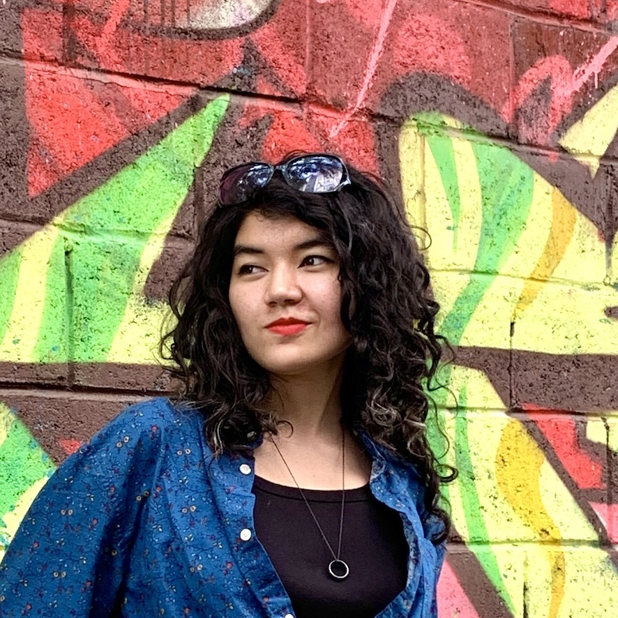

~*~ Bio ~*~

Bio
Hi! I am Deniz, a first year PhD student at Paul G. Allen School of Computer Science, University of Washington (UW). I am advised by Prof. Yulia Tsvetkov and Prof. Tim Althoff.
My research interests are AI in therapy, NLP, Multilingual NLP, AI Bias, Neuro-Symbolic AI, HCP, HCI, Socially Responsible AI
Before my PhD, I spent a year assisting to mental health startups as an AI engineer while also working with UNDP Kyrgyzstan and UN Women ECA as a data analyst and engineer. I completed a double major in Software Engineering and Psychology at the American University Of Central Asia.
Publications Hall of Fame
News Flash